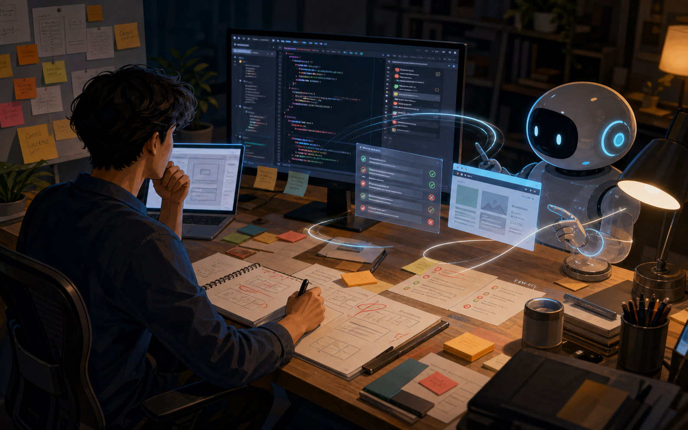
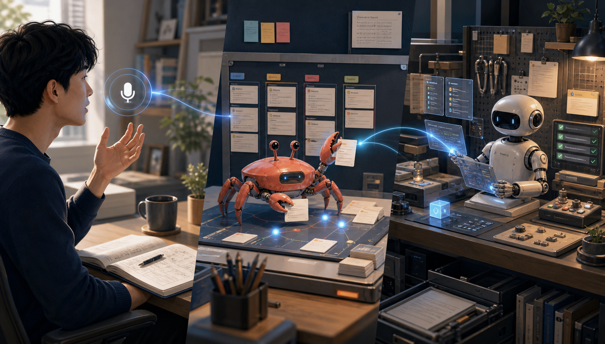
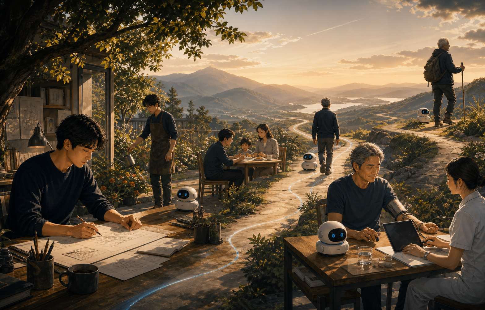

一场关于工作、健康、业务与长期成长的 AI 修行。
工具会迭代，方法会迁移；真正有复利的是完成事情的方式。
| 工具清单 | 系统能力 |
|---|---|
| 关注模型名 | 关注任务如何被交付 |
| 追逐新功能 | 建立稳定流程 |
| 一次性提效 | 形成可复用资产 |
| 靠感觉判断 | 用证据验收结果 |
过去我们操作软件；现在我们要表达目标、组织上下文、验收结果。
| 旧接口 | 新接口 |
|---|---|
| 打开软件 | 说明目标 |
| 点击菜单 | 提供上下文 |
| 手工执行 | 让系统协作 |
| 人脑记流程 | 让流程留下痕迹 |
AI 不只是更聪明的搜索框。它正在从“回答问题”进入“参与任务”，人也必须从操作者升级为编排者。
单点技能仍然重要，但高价值部分正在上移到系统设计。
会做一件事，是技能；让一类事持续被做好，是系统能力。AI 越强，人的价值越不该停留在执行末端。
Prompt 是入口，任务编排才是 AI 时代真正的工作方式。
多数人已经开始用 AI，但真正的差距在于使用层级。
| 层级 | 典型用法 | 价值变化 |
|---|---|---|
| Level 1 | 问答解释 | 获取答案 |
| Level 2 | 局部提效 | 缩短时间 |
| Level 3 | 工作流伙伴 | 复用流程 |
| Level 4 | 业务引擎 | 嵌入系统 |
Level 1 和 Level 2 解决“快一点”；Level 3 和 Level 4 开始解决“持续做成”。
一句话需求只能得到一次结果；任务协议才能形成稳定流程。
| 任务 | 流程 |
|---|---|
| 帮我写一篇文章 | 先确认读者、场景、观点 |
| 直接生成 | 先读素材，再出结构 |
| 看起来能用 | 按清单检查事实和表达 |
| 做完即结束 | 复盘为模板和规范 |
任务编译，就是把一句话愿望翻译成目标、输入、步骤、验收和沉淀物。
AI 的复利不在一次答案，而在下一次可以更快、更稳地重复。
临时问题 → 明确交付物 → 拆成步骤 → 接入材料和工具 → 设置验收标准 → 留下模板和记录
从这里开始，AI 不再只是“帮忙的人”，而是进入了一套可运行的工作环境。
专业分析不能停在“总结一下”，它需要可追溯、可验证、可复用。
招股书/PDF → 业务模式拆解 → 财务质量分析 → 风险与估值问题 → 投资报告 → ipo-review 技能
把抽取模板、指标清单、风险清单、引用规范和输出格式沉淀进 ipo-review，让下一份招股书从同一套轨道上运行。
Vibe Coding 不是让 AI 随便写，而是让人的意图通过快速迭代变成可验收结果。
| 人 | AI | 系统 |
|---|---|---|
| 定方向 | 生成方案 | 保存上下文 |
| 设边界 | 执行步骤 | 调用工具 |
| 做判断 | 修正局部 | 留下记录 |
| 验收结果 | 提供备选 | 支持复盘 |
所谓“感觉”，不是模糊要求，而是人对结果质量、语气、结构和边界的综合判断；工程化之后，它会变成可重复的迭代闭环。
做 PPT 的目标不是生成页面，而是完成一次能讲、能读、能发布的内容交付。
主题定位 → 演讲框架 → 完整演讲稿 → PPT 内容稿 → HTML PPT → 视觉配图 → 截图审查 → GitHub Pages 发布
框架文档、完整演讲稿、内容稿、HTML 模板、图片目录、README、Git 记录和展示仓库，共同构成这份 PPT 的驾驶舱。
好的提示词更像交接单，而不是漂亮话。
| 要素 | 作用 |
|---|---|
| 背景 | 让 AI 知道任务从哪里来 |
| 目标 | 明确最终交付物 |
| 约束 | 避免跑偏和过度发挥 |
| 输入 | 提供材料和上下文 |
| 输出 | 规定格式和粒度 |
| 验收 | 说明怎样算完成 |
任务描述越像临时聊天，结果越靠猜；任务描述越像协议，AI 越容易进入工作状态。
AI 提效的关键不在生成速度，而在闭环质量。
目标：定义交付物和成功标准 上下文：准备材料、历史、约束、偏好 执行：拆小步，让 AI 与工具协作 验证：检查事实、结构、引用、运行结果 复盘：把经验沉淀成模板、技能或系统
没有验证，速度会放大错误；没有复盘，提效不会留下复利。

Agent-first 的关键不是只换更强模型，而是为 Agent 建立能工作的环境。
OpenAI Engineering Blog, “Harness engineering: leveraging Codex in an agent-first world”, 2025.
AI 产物经常看起来完整，但可靠性来自证据链。
| 看起来对 | 可以证明对 |
|---|---|
| 语言流畅 | 引用可追溯 |
| 结构完整 | 数字可核对 |
| 方案合理 | 约束被满足 |
| 页面漂亮 | 交付路径可打开 |
Vibe Coding 的速度来自快速试错，Harness Engineering 的价值是把试错变成可审查的轨迹。
没有纪律的快，会把错误扩散到更多页面、更多代码和更多决策里。
AI 一次能改很多文件、写很多文案、生成很多方案。诱惑在于“马上有结果”，风险在于需求没说清、上下文给错、一次改太大，返工也会同步放大。
越快，越要小步；越自动，越要留痕；模型越自信，人越不能放弃最后审查权。
速度不是目标，可控的速度才是能力。
Vibe Coding 不只适用于写代码，它可以迁移到研究、写作、分析和决策。
同一套闭环可以处理不同领域：先定义交付，再搭上下文，再分步执行，最后验证和沉淀。
个人效率的下一步，不是多装工具，而是建立自己的 AI 工作台。
AI 只有接入你的工作环境，才会从外部工具变成长期伙伴。
150 岁不是预测，而是一个倒逼长期主义的思维实验。
健康不是一次性项目，而是长期运行的系统。目标不是追求完美，而是让身体、工作和生活可以被持续维护。
AI 进入业务，不是把聊天框放进产品，而是重构业务链路。
| 层级 | 关注点 | 典型问题 |
|---|---|---|
| 个人效率 | 我能不能更快完成 | 有无模板和工作台 |
| 团队流程 | 多人如何协作 | 有无权限、日志和交接 |
| 业务系统 | AI 是否进入核心链路 | 有无质量、成本和风险控制 |
真正的业务接入，要求 AI 能进入输入、处理、验证、交付和反馈全过程。
业务中的 AI 不能只看“生成了什么”，还要看它处在闭环的哪个位置。
输入：客户需求、数据、文档、行为记录 处理：分析、生成、检索、调用工具 交付：报告、页面、任务结果、产品功能 反馈：点击、转化、人工评价、异常记录
没有反馈的 AI 功能，很难持续变好；没有日志的自动化，很难进入真实业务。
AI 改变的不是“谁更重要”，而是每个人在链路里的位置。
| 人更适合 | Agent 更适合 |
|---|---|
| 定目标 | 批量生成 |
| 做取舍 | 检索整理 |
| 判断风险 | 执行重复步骤 |
| 负责结果 | 保留过程记录 |
人不该把判断外包给 AI，也不该把重复劳动全部留给自己。合理分工，才是效率和质量同时提升的基础。
面对 AI 变化，最危险的不是看不见趋势，而是把趋势当结论。
趋势用来提出假设，业务用来验证假设。AI 时代更需要实验，而不是只需要判断。
产品化的本质，是把个人跑通的流程变成别人也能使用的系统。
TapSay：解决输入效率 SemiCrab：解决任务执行 Semibot：解决任务平台化
这三类产品对应同一条升级路径：先降低个人摩擦，再稳定任务流程，最后把流程开放成平台能力。

很多提效不是发生在 AI 输出端，而是发生在人向 AI 表达的入口处。
口语输入 → 语音转写 → 识别上下文 → 润色为 prompt / 正式文本 → 插入当前光标 → 历史复用
TapSay 的核心不是语音识别，而是把人的临时想法编译成软件和 AI 都能使用的输入。
当任务变复杂，产品就必须从“生成结果”升级为“管理过程”。
SemiCrab 解决“任务如何稳定执行”，Semibot 解决“任务能力如何被更多人、更复杂场景调用”。
AI 的真正复利，不是一次快，而是每次使用都让系统变强一点。
一次使用如果没有沉淀，只是消费模型能力；一次使用如果留下模板、技能或系统，就是在建设自己的长期能力。
150 岁不是年龄承诺，而是用更长时间尺度重新设计工作、健康和成长。
给 AI 装上方向盘 给任务装上流程 给业务装上闭环 给健康装上仪表盘 给人生装上长期主义
